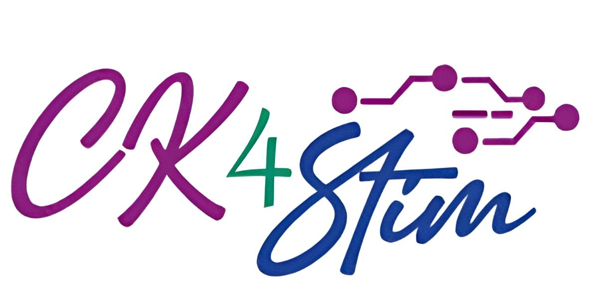
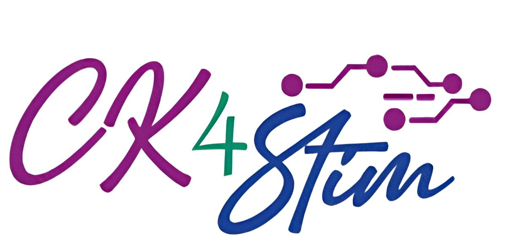

İletişim
Adres: İzmir Katip Çelebi Üniversitesi Sağlık Bilimleri Fakültesi Çiğli Ana Yerleşke - İzmir
Telefon: +90(232) 329 35 35 (dahili:4835 / 4822 / 4820)
E-mail: ftrkongre2024@ikc.edu.tr
Ulaşım:Kampüsümüze İzban Egekent Durağından 596 ve 817 numaralı Eshot otobüsleriyle ulaşım sağlanmaktadır.
Bostanlı Vapur İskelesinden 595 numaralı Eshot otobüsüyle ulaşım sağlanmaktadır.
Çiğli tramvay hattı İzmir Katip Çelebi Durağı kampüsümüzün arka kapısında yer almaktadır.